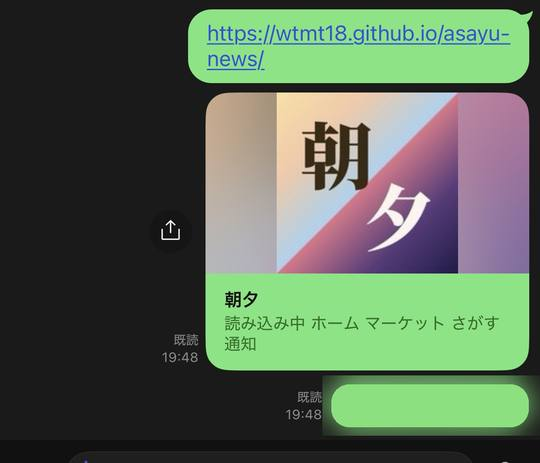
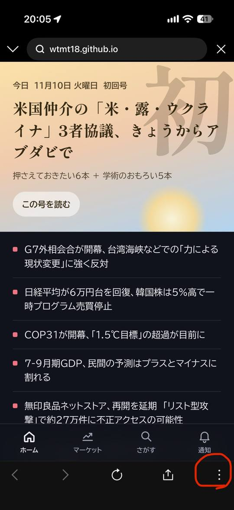
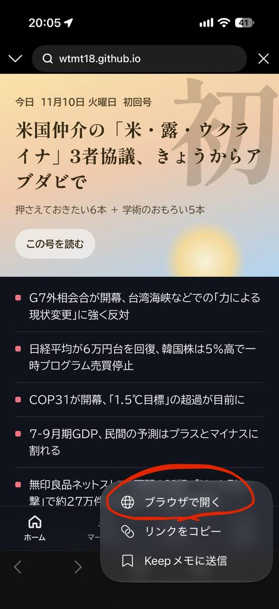
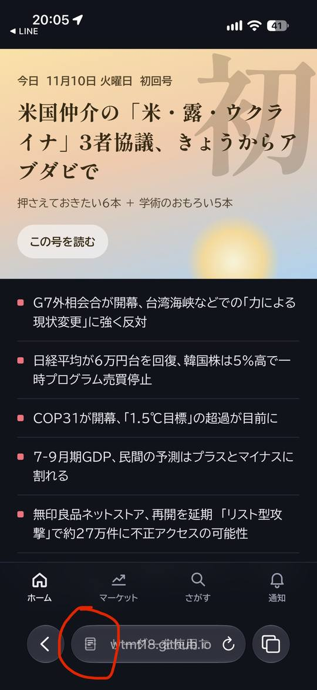
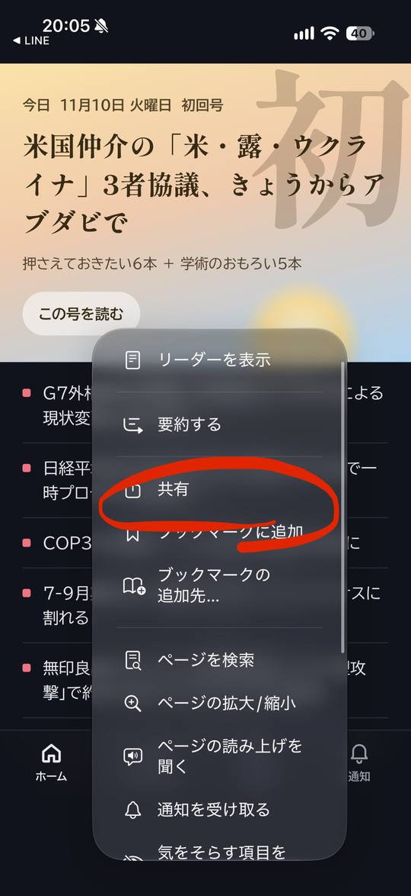
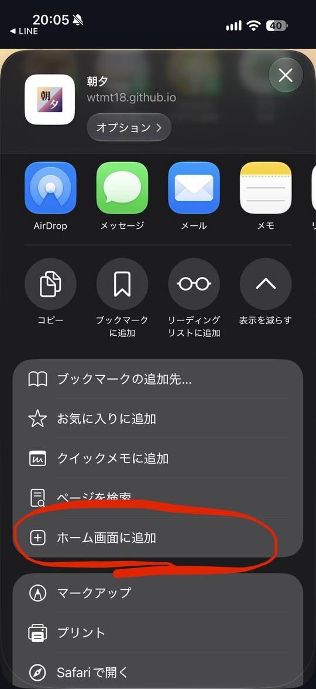
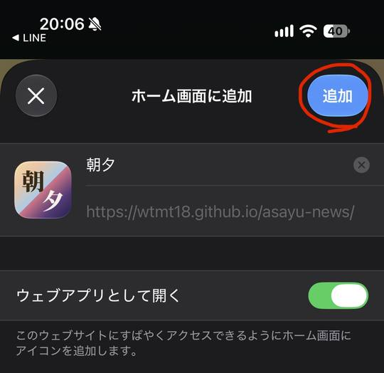
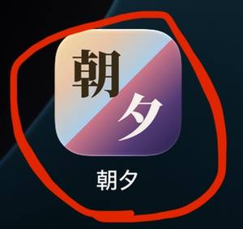
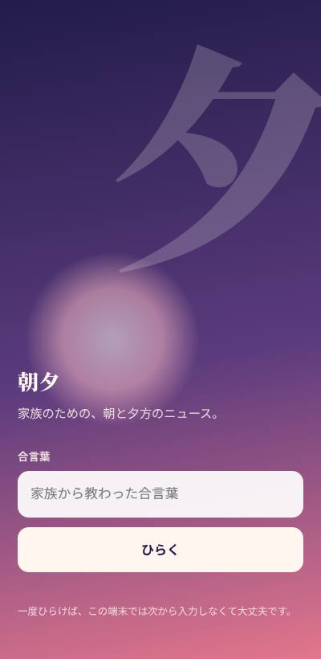

はじめに用意するものLINEなどで届いた「アプリのリンク」と「合言葉」。合言葉はこのページには載っていません。わからなければ、送ってくれた家族に聞いてください。
iPhoneの場合
LINEで届いたリンクから始める手順です。
1
LINEで届いたリンクをタップ
https://wtmt18.github.io/asayu-news/ のリンクをタップします。合言葉も一緒に届いているはずなので、あとで使います。

2
右下の「︙」をタップ
LINEの中でページが開きます。このままではホーム画面に追加できないので、Safariで開き直します。

3
「ブラウザで開く」を選ぶ
Safariに切り替わります。

4
アドレスバー左のアイコンをタップ
画面下のアドレスバーの左端にある、ページの形をしたアイコンを押します。

5
「共有」を選ぶ

6
下へスクロールして「ホーム画面に追加」

7
「ウェブアプリとして開く」がオンのまま「追加」
緑のスイッチはオンのままにしてください。オフだと通知が受け取れません。

8
ホーム画面の「朝夕」アイコンから開く
これからは、このアイコンをタップすればアプリとして開きます。

9
合言葉を入れて「ひらく」
家族から教わった合言葉を入力します。一度ひらけば、そのスマホでは次から入力しなくて大丈夫です。

通知をオンにする
新しい号が届いたときに、スマホにお知らせが来るようにします。
1
ホーム画面のアイコンからアプリを開く
iPhoneは、ホーム画面のアイコンから開いたときだけ通知を設定できます（iOS 16.4以降）。
2
下の「通知」タブ →「通知をオンにする」
「通知を許可しますか？」と聞かれたら「許可」を選びます。配信リストへの登録は自動で行われます。
3
「✅ 通知はオンです」と出たら完了
30分ほどで「通知の登録ができました」というお知らせが届きます。届けば準備完了です。
テストしてみる「通知」タブの「テスト通知を出す」を押すと、届き方を確かめられます。
Androidの場合
1
リンクをChromeで開く
LINEの中で開いた場合は、右下の「︙」→「ブラウザで開く」でChromeに切り替えます。
2
右上の「︙」→「ホーム画面に追加」
「アプリをインストール」と表示される場合はそちらを選びます。
3
アイコンから開いて合言葉 → 通知をオン
あとはiPhoneの手順9と、「通知をオンにする」と同じです。
困ったときは
「ホーム画面に追加」が見つからないLINEの中で開いたままになっていないか確認して、手順2〜3でSafari（AndroidはChrome）に切り替えてください。
合言葉がちがうと言われる全部小文字・半角で、ハイフン（-）も入れて入力してください。それでもだめなら、家族に新しい合言葉を聞いてください。
通知が来ないスマホの「設定」→「通知」→「朝夕」で通知が許可されているか確認してください。アプリの「通知」タブが「✅ 通知はオンです」になっているかも確認してください。
合言葉の取り扱い合言葉は家族の中だけで共有してください。SNSなど、他の人が見られる場所には書かないでください。